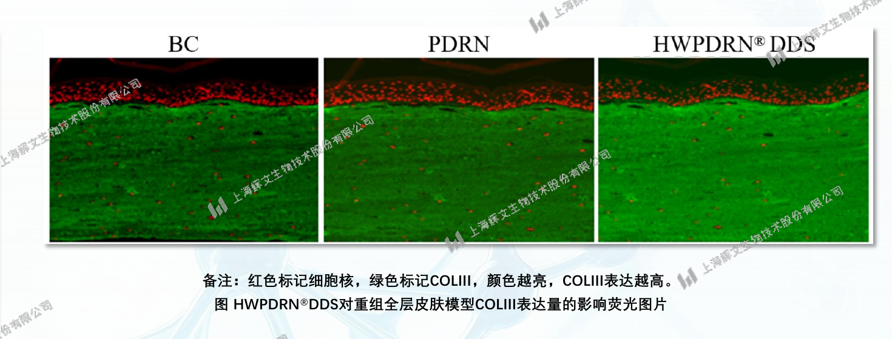
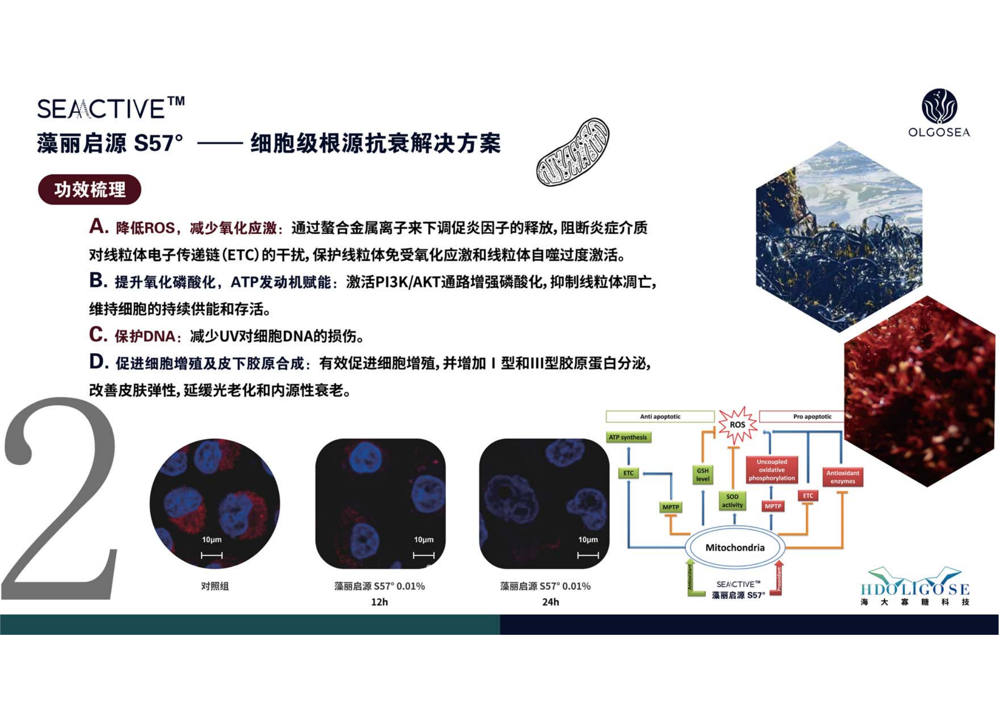
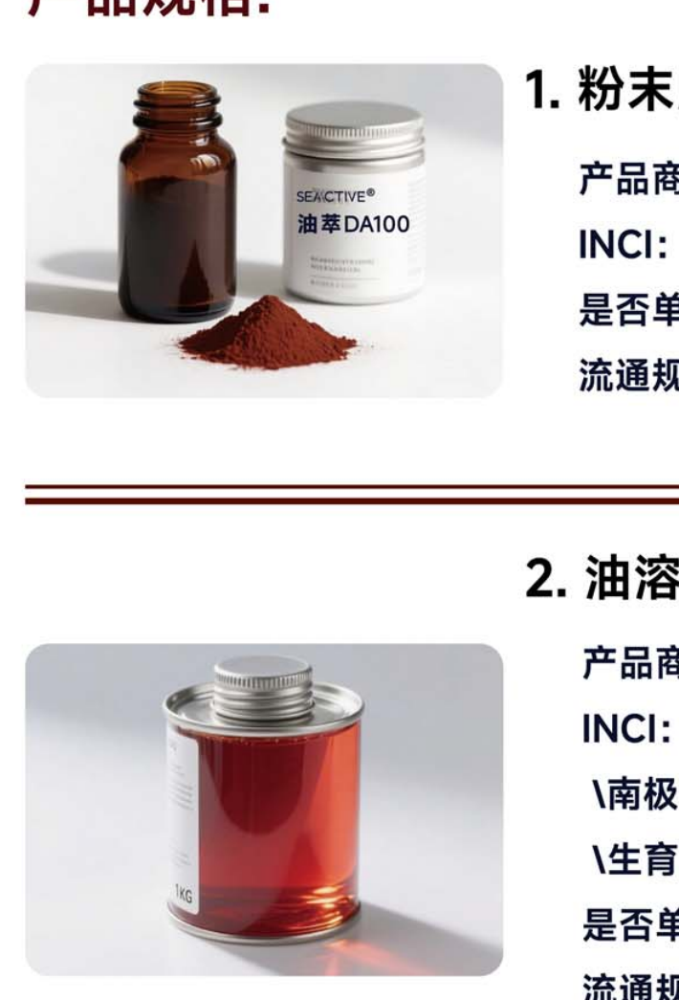
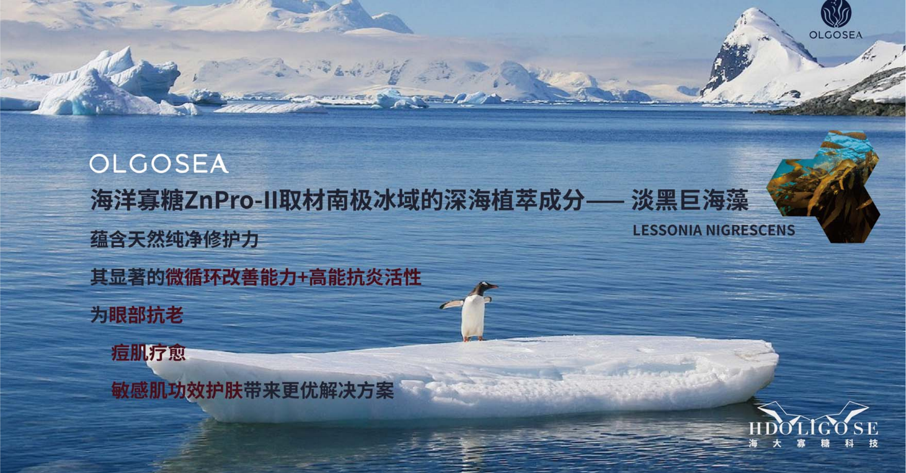
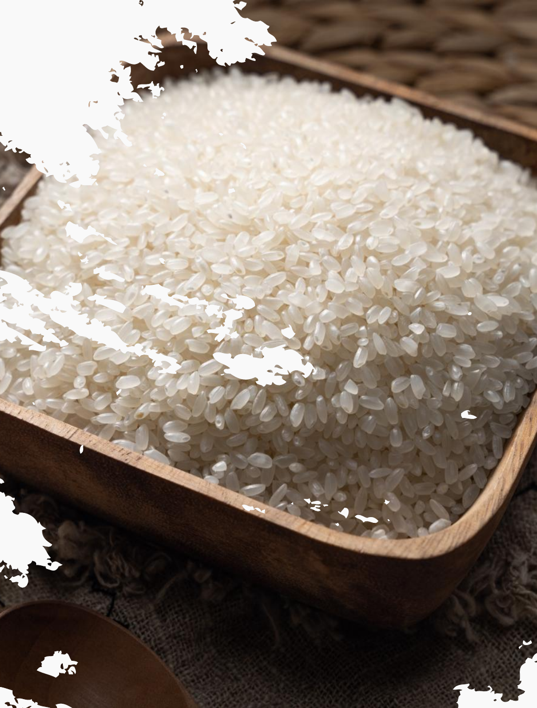

单点抗皱
围绕胶原表达或即时填充，故事清楚，但难以解释复杂老化过程。
单一指标消费者看到的是皱纹、松弛与暗沉，配方端面对的却是递送效率、能量下降、氧化压力、慢性炎性环境与基质结构变化的叠加。
围绕胶原表达或即时填充，故事清楚，但难以解释复杂老化过程。
单一指标将信号、抗氧化、舒缓和结构修护组合，但需要更清楚的证据分层。
多靶点组合机制 × 递送 × 人体 × 配方，形成能被品牌复用的完整产品资产。
可验证平台六款原料分别覆盖炎症环境、细胞供能、光老化、真皮结构、再生信号与氧化压力，再按剂型和目标客群进行组合。
A2AR / EGFR / FGFR1 / COLIII
ATP趋势 / UVB DNA保护 / 耐受
岩藻黄素 / 油相递送 / 避光
透皮 / 舒缓 / 微循环
28天人体 / 保湿 / 皱纹 / 弹性
斑马鱼ROS / SA-β-gal / 双体系
每款原料均按“来源与结构、作用靶点、原始数据、配方入口、证据边界”展开，便于销售介绍、研发选型与品牌立项。
让 PDRN 从“概念”走向“可达”

COLIII 重组全层皮肤模型荧光图模型数据用于原料筛选与机制表达，不等同于人体成品功效。
把“抗衰”讲到线粒体

资料包中的完整功效梳理页·线粒体/细胞荧光图现有文件名未明确标注“第三方”，页面按“资料包测试数据”展示。
把光老化防御放进油相

围绕抗氧化、炎症调节与胶原降解通路，适用于修护油、晚霜及日间光老化防御类产品。
不再使用旧版固定添加区间；成品功效需结合稳定性、安全性及人体测试确认。
先穿透，再管理炎性微环境

南极冰域海藻来源与科研背景透皮结果来自重组皮肤模型；第三方结果需保留测试浓度和方法。
28天，把结构变化落到人体

大米来源的小分子蛋白肽报告同时追踪弹性与紧致度；人体数据必须与测试配方、浓度、样本量及周期一起表达。
分子量峰面积是原料研究/质控指标，不等同于人体吸收率。
从ROS减负到衰老表型改善
分别采用CellROX荧光与SA-β-gal染色评价ROS及衰老表型。
测试浓度与LIPID不同，不以百分比直接判断两种样品的强弱。
资料包未提供完整INCI与配方规格页，本页不外推材料结构、添加量或人体功效。
已从资料包中补齐透皮、稳定性、信号表达、抗炎、紧致、人体抗皱与安全检测证据。点击可查看完整结果页；对外正式使用时建议同步提供完整PDF原件。
按人群与老化场景组合核心原料，突出“机制互补 + 证据衔接”；以下为概念组合，不预设固定添加比例。
能量重启 + 胶原支持 + 微环境管理
油相抗氧 + 自由基管理 + 能量防御
炎症降噪 + 舒缓屏障 + 结构修护
再生信号 + 胶原生成 + 微环境支持
严格对应75页最终版抗衰提案，使用原稿中的中文商品名。案例用于说明同类成分的市场应用，不代表品牌采用本公司对应商品原料或与本公司存在合作。
NATURE REPUBLIC超级水润爽肤水、超级水润乳液与超级水润复合面霜，覆盖补水、柔润及水油平衡方向。
EMINENCE ORGANICS海洋花肽抗皱精华、海洋花肽眼霜与海洋花肽系列，市场表达集中在细纹、紧致和长效保湿。
SIDMOOL E.F.I焕活眼霜、焕亮淡斑霜，以及SKIN ACTIVES SCIENTIFIC焕亮抗氧化精华，体现多肽、亮肤及复合抗氧化应用。
DERMALOGICA水循环保湿精华、EMINENCE ORGANICS海洋花肽浓缩精华与海洋花肽晚霜，覆盖屏障、细纹和紧致需求。
VT COSMETICS PDRN精华100、MEDICUBE PDRN粉红肽精华与ANUA PDRN玻尿酸胶囊100精华，市场表达集中在弹性、保湿、光泽与充盈感。
Cosmetex Roland超润透明质酸化妆水、Dr.Ci:Labo Super 377VC焕亮精华与MISSHA维C Plus安瓶精华，体现保湿、亮肤与协同抗氧化应用。
公开配方及商品信息可能随地区、批次和品牌更新调整，正式客户材料应以品牌最新成分表为准。
核心赛道负责“有报告的主故事”，产品矩阵中的其他原料负责增强屏障、基质、即时肤感和差异化剂型。
在富勒烯证据基础上补充自由基清除与城市氧化压力故事。
强化GAG、胶原与饱满紧致方向，可与FCT1组成“肽+胶原+基质”路线。
覆盖屏障、光损伤、蓝光与环境压力管理，适合日间抗老和敏感肌抗衰。
积雪草与马齿苋外泌体补充抗炎、修护与纳米递送概念。
把促胶原与紧致故事扩展到面霜、修护油、防晒和彩妆油相。
为“年轻稳态”提供长期屏障底盘，改善干燥、粗糙与敏感反复。
扩展池来自现有产品矩阵的功效定位；正式进入客户方案前，应按具体项目补齐相应TDS、功效报告与法规资料。
一句话原则：能讲到哪一层，由证据决定；不是由文案力度决定。
来源、组成、纯度、分子量、建议添加量。
细胞、离体、重组皮肤模型的数据。
特定配方、浓度、样本量与周期下的人体结果。
最终配方的稳定性、安全性及人体功效。
当前资料包以 MSDS、SPEC、TDS 与原料报送码为主，缺少与HWPDRN DDS同等级的透皮或功效报告；补齐后可进入赛道。
可按日间光防御、夜间再生、眼周微循环、氧化压力管理四个方向，进一步提供报告原件、样品与项目配方建议。